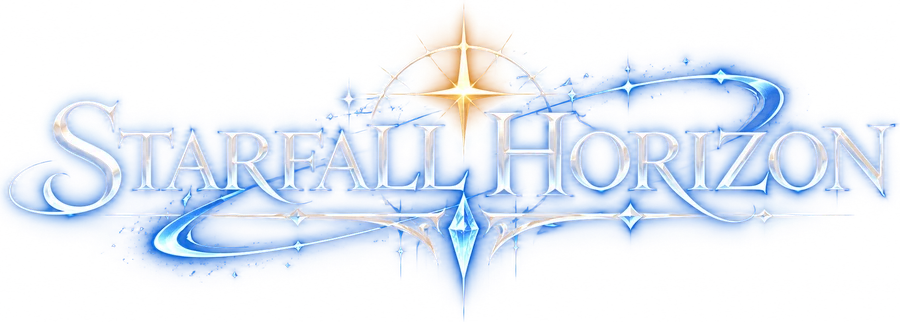
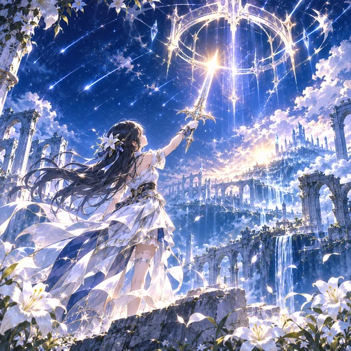
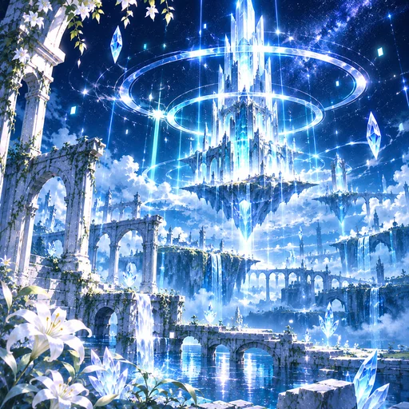
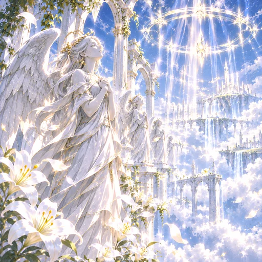
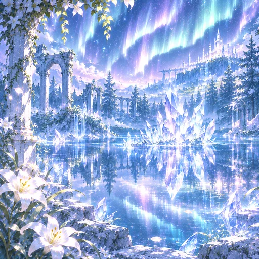
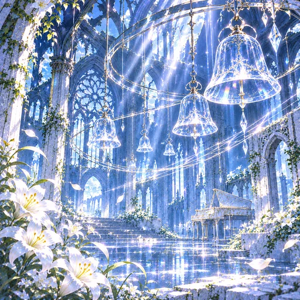
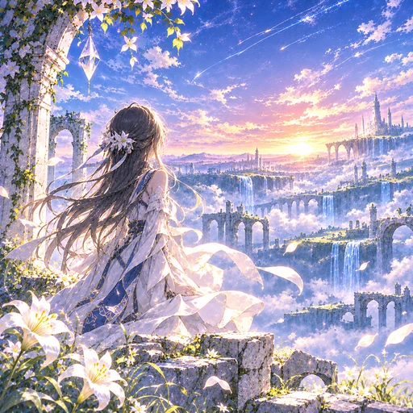
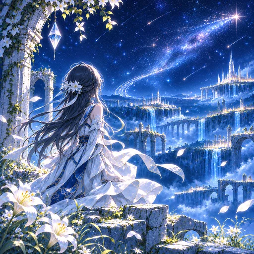

A 4-lane rhythm game that builds the chart from your own mp3. It runs in your browser, with no install and no sign-up.
Starfall Horizon is a 4-lane rhythm game set in a ruined city under falling stars. Notes travel down four lanes, and you tap when they reach the judgment line. Long hold notes must be held down for as long as they stretch.
What sets it apart is that you bring the music. Load an mp3 and the game analyzes the audio, detects the tempo (BPM), and generates a chart that follows it. Tracks made with AI music tools such as Suno, songs you composed yourself, or any audio you own can be played right away.
If you don't have an mp3 handy, 8 original tracks by the creator are included as official songs. They are all instrumentals with no lyrics (some have light backing chorus) and are easy to follow rhythmically.
There is also Score Attack, where you pick 3 official songs and play them back to back. Your combo carries over from one song to the next.
The judgment line sits a little higher on the screen so your fingers don't cover the notes. You can change its position in Options.
Your timing is judged on five levels: PERFECT, GREAT, GOOD, BAD and MISS. The smaller the timing error, the more points you get, and MISS and BAD break your combo. On higher difficulties the timing windows become a little stricter.
The maximum score is 1,000,000. A hold note is worth two regular notes. Your score earns one of the following ranks.
| Rank | Score |
|---|---|
| SS | 970,000 or more |
| S | 900,000 or more |
| A | 800,000 or more |
| B | 650,000 or more |
| C | Below 650,000 |
Best scores for each difficulty are saved on your device. For official songs you can also see an "overall rating" per difficulty, which adds up your best score on each song (MY SOUND tracks are not included).
Pick 3 official songs, choose a difficulty, and play them in a row. A short screen appears between songs, and your combo carries over to the next one. There is no fail condition.
Score Attack uses its own scoring. Each judgment gives points, multiplied by a combo bonus (+0.1 for every 10 combo, up to x2.0), so keeping your combo alive pays off. Your total across the 3 songs earns a rank, and the top 3 runs for each difficulty are saved with the 3 songs and the points for each.
Competing and recording your own skill are kept in separate places. The ranking is for competing with other players. Medals are about what you have built up yourself, regardless of rank.
Pick 3 official songs, choose a difficulty for each, and play them back to back. Your combo carries across songs, and your score is multiplied up to x5 at 1000 combo. Harder difficulties give more points. The maximum score is not published.
The ranking has one entry per player and shows the top 100, overall and by nation. Beating your best updates your entry. If you change your name or ID, the old display stays until you update your record yourself.
Records are checked on the server, and records with an impossible number of songs, play time or score are not counted. Because this is a beta test, the ranking may be discontinued if cheating continues.
To play, choose a name (3 characters: letters, numbers and symbols) and a nation. An ID is assigned automatically. No email address is needed.
In the ranking you belong to one of three nations. The "Nations" tab on the ranking screen shows each nation's total score of its top 100 players, and how many players it has.
| EMB | Ember Principality - Forges star shards in fire. A land of smiths and song. A passionate nation. |
| CEL | Celesta Federation - Watches over the stars from sky and water. A land of observers. A calm nation. |
| SOL | Solaris Dynasty - A land of bells and wheat, tasked with announcing the dawn. A persistent nation. |
Trophies are earned according to your rank: Participation, Top 100, Top 50, Top 40, Top 30, Top 20, Top 10, 3rd, 2nd and 1st place (10 in total).
When you play official songs, a medal is awarded for each song and difficulty: "O" for a clear, a star for a full combo, and a sparkle for an all perfect. Your ranking position has no effect.
Your medals decide one of six titles, which you can see from "MEDALS" on the home screen.
| Apprentice | Cleared one official song |
| Traveler | Full Combo on EASY or higher |
| Adept | Full Combo on NORMAL or higher |
| Master | Full Combo on HARD or higher |
| Star Sovereign | Full Combo on EXPERT |
| Zenith | All Perfect on EXPERT |
Medals and trophies are stored inside your device.
When you use the ranking, the following is stored on a server (Google Firebase): your name (3 characters), nation, ID number, score, the breakdown of your 3 songs (song, difficulty, points), total play time and date. Your name, ID number, nation, score and per-song points are visible to other players. Real names, email addresses and location are not collected. See the Privacy Policy (Japanese) for details.
There are five difficulties: BEGINNER, EASY, NORMAL, HARD and EXPERT. The same song gets a finer or coarser chart depending on the level.
| Level | How notes are placed |
|---|---|
| BEGINNER | One note every two beats, only on clear sounds. No chords or holds, and the timing is forgiving. For people new to rhythm games. |
| EASY | Relaxed placement centered on the beats. No chords. For first-timers. |
| NORMAL | Beats plus eighth-note sounds. No chords. |
| HARD | Picks up fine sixteenth-note sounds, with a few chords. |
| EXPERT | Follows almost every small movement in the music, with many chords and holds. The timing is the strictest. |
Where low sounds (kick and bass) stand out, notes tend to land in the two inner lanes; where high sounds (hi-hat and melody) stand out, they tend to land in the two outer lanes. The movement of the music becomes the movement of your fingers.
If you tick "Remember on this device", the track is saved on your device and next time you only need to pick it from the list. You can save up to 12 tracks, 40 MB each. You can also replace the cover image with one of your own.
Your audio files are processed only on your device and are never sent to a server. Please use only music you have the rights to.
The game includes 8 original BGM tracks by the creator, はぜる (Hazeru), made with Suno. Official songs can be played by simply choosing one; their BPM is already set. More songs are planned.







Mobile browsers can't play audio until you tap the screen, so sound starts after you pick a song. If it still doesn't play, check your device's silent mode and volume.
The automatically detected BPM can be off for some tracks, especially ones whose tempo drifts partway through. On the setup screen, nudge the BPM little by little until it matches.
Choose an audio file such as mp3, m4a, wav or ogg. Tracks shorter than 8 seconds or larger than 40 MB can't be loaded.
Songs and scores are stored inside your browser. Clearing site data or using private browsing can erase them, and they don't carry over to other devices or browsers.
Use "Timing adjustment" in Options to compensate for notes feeling early or late. Wireless earphones delay the sound, so adjust for that.
If the connection failed, you can send it later from "Send unsent record" on the ranking screen. Even with a connection, records that fail the server's checks, such as an impossibly short play time or an impossible score, are not counted.
Use "Change name / nation" on the ranking screen. After changing, the ranking keeps showing the old display until you update your record yourself. You can change nations freely. Once updated, your record moves to the new nation's "Nations" total (and leaves the old one).
Yes. "MEDALS" on the home screen keeps your clears, full combos and all perfects of official songs as medals and titles, regardless of rank.
No, it's free, and no sign-up is needed. Only when you use the ranking do you choose a name (3 characters) and a nation. No email address is needed.
| Nov 19, 2026 | Added ranked mode (beta), nation standings and trophies. Added medals and titles to free play. |
| Nov 16, 2026 | Added Score Attack. Tapping a song in the song list now plays a preview. |
| Nov 12, 2026 | Added 8 official songs and the official songs mode. Added English language support. |